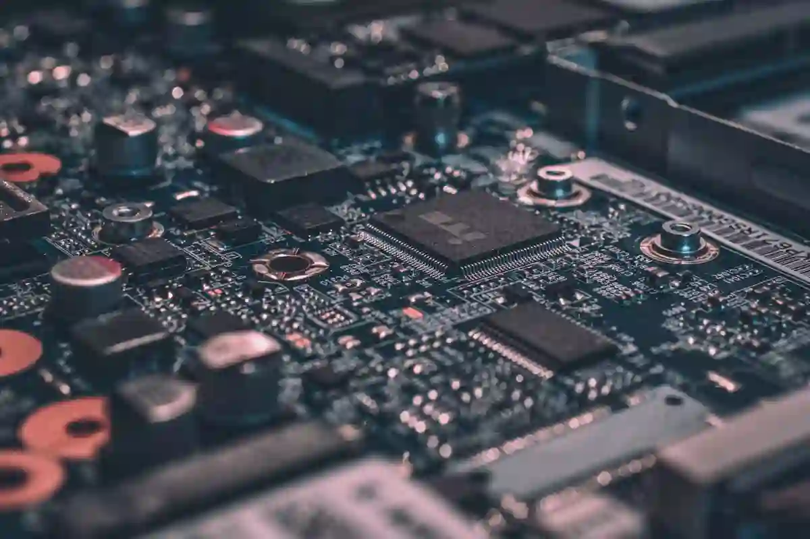

E ntre 1848 y 1855, más de 300,000 personas abandonaron sus empleos, vendieron sus tierras y empeñaron sus pertenencias con una sola idea en mente: encontrar pepitas de oro en los ríos de California.
La promesa era seductora, casi irresistible: riqueza instantánea al alcance de cualquiera dispuesto a ensuciarse las manos.
Sin embargo, los registros contables y la historia del capital revelan una realidad completamente opuesta. La enorme mayoría de los buscadores de oro terminó más pobre de lo que llegó.
Las grandes fortunas, aquellas que construyeron imperios familiares, bancos multinacionales y marcas globales que aún hoy cotizan en bolsa, no provinieron de extraer metal de la tierra, sino de entender cómo fluye el capital cuando el entusiasmo colectivo se apodera de un mercado.
Para quien busca construir patrimonio hoy en día, la Fiebre del Oro no es un evento de libros escolares, sino un manual vivo sobre oferta, demanda y posicionamiento estratégico.
En todo mercado en expansión existe una masa impulsada por la emoción y una minoría silenciosa que estructura el ecosistema que hace posible esa euforia.
Este acontecimiento merece analizarse desde otra perspectiva: buscar dónde estaba realmente el negocio, más allá de la fantasía del dinero fácil.
El negocio detrás de la Fiebre del Oro
Las grandes oportunidades de negocio no suelen nacer de la nada. Antes de que el primer gramo de oro fuera descubierto en Sutter’s Mill, Estados Unidos atravesaba una transformación profunda en su estructura financiera y comercial.
Tras la guerra con México y el fin de recesiones previas, el país necesitaba impulsar su integración territorial y acelerar la circulación de dinero. La moneda física escaseaba y la liquidez comercial en las costas era limitada.
Cuando se confirmó el hallazgo de metales preciosos, el valor percibido del territorio explotó de la noche a la mañana. Esto provocó una migración masiva de capital humano y monetario hacia una región desprovista de infraestructura.
No se trató solo de gente buscando suerte; fue una reasignación de recursos a escala masiva donde la demanda de bienes esenciales creció a un ritmo mil veces superior a la oferta disponible.
Aquellos que comprendieron esa desconexión entre oferta y demanda local controlaron los precios y, por ende, el flujo constante de riqueza.
Por qué el oro no garantizaba hacer fortuna
El buscador promedio asumió todo el riesgo operativo de la actividad: viajes agotadores, trabajo físico extremo, exposición a enfermedades e incertidumbre total sobre el resultado.
Económicamente, competir en la extracción directa de un recurso abundante en intenciones pero limitado en hallazgos convierte la actividad en una lotería de margen decreciente.
A medida que llegaban más competidores, el rendimiento medio por persona caía drásticamente.
En el mundo de los negocios modernos sucede exactamente lo mismo. Cuando un sector se pone de moda, la competencia feroz erosiona los márgenes hasta que solo la suerte o una escala gigantesca permiten sobrevivir.
El emprendedor que busca crear valor no entra en la carrera por conseguir lo mismo que todos; analiza el tablero para descubrir qué insumos indispensables necesitarán todos los competidores para seguir operando.
Vender insumos era más rentable que buscar oro
Quienes acumularon fortunas sostenibles durante este periodo aplicaron lo que en finanzas modernas conocemos como monetización de infraestructura.
El caso más claro fue el de Levi Strauss, un comerciante que entendió que los mineros no necesitaban discursos sobre riqueza, sino pantalones de alta resistencia que soportaran el trabajo en las minas.
Strauss no buscó oro; abasteció una necesidad operativa innegociable y creó una marca emblemática que trasciende siglos.
De manera similar, Samuel Brannan se convirtió en uno de los primeros millonarios de California al comprar con anticipación todos los picos, palas y sartenes de la zona para luego venderlos con márgenes de ganancia superiores al 500%.
Brannan no arriesgó su capital en la incertidumbre de la mina; garantizó su flujo de caja vendiendo el equipamiento necesario para entrar en ella.
La lección es contundente: en momentos de alta demanda, el proveedor del canal es quien captura la ganancia más constante.
Otras fortunas que nacieron debido al acontecimiento
El oro extraído no tenía valor hasta que pudiera ser transportado, resguardado y convertido en liquidez utilizable para el comercio.
Ahí radicó el negocio de Henry Wells y William Fargo, creadores de Wells Fargo, quienes desarrollaron rutas de transporte seguro, servicios de mensajería y custodia financiera para los mineros y comerciantes.
Ellos crearon el sistema de tuberías financieras por el que debía pasar la liquidez del estado.
A medida que la masa trabajaba en el barro, la infraestructura bancaria y de transporte cobraba comisiones por cada transacción y por cada traslado.
No importa si el minero encontraba oro o no; el transporte se pagaba por adelantado y la custodia del capital generaba intereses.
Al posicionarse en el flujo del dinero y no en el origen del riesgo, convirtieron la volatilidad del entorno en un negocio de renta predecible.
Cómo la llegada de los mineros disparó el valor de la tierra
El crecimiento acelerado de la población en zonas rurales transformó asentamientos improvisados como San Francisco en centros de comercio global en cuestión de meses.
La tierra utilizable cerca de los puertos y los centros de abastecimiento se convirtió en el activo más codiciado.
Comerciantes e inversionistas con visión compraron parcelas y edificaron almacenes, hoteles y centros de acopio.
Los precios de los arriendos e inmuebles en San Francisco se dispararon a niveles comparables con los de las grandes capitales europeas.
Mientras la mayoría desgastaba su salud en las montañas, los dueños de los inmuebles comerciales cobraban rentas fijas en oro a los negocios que atendían a la masa.
La escasez de espacio estratégico superó con creces la rentabilidad de la mayoría de las concesiones mineras.
Por qué la Fiebre del Oro impactó al mercado internacional
La enorme cantidad de oro extraído e inyectado en el circuito comercial transformó la economía mundial.
La oferta de liquidez a nivel internacional aumentó, facilitando el comercio transatlántico, la financiación de ferrocarriles y la expansión de la Revolución Industrial.
El centro del comercio global comenzó a desplazarse con fuerza hacia el Pacífico, integrando a América del Norte en las grandes cadenas de suministro mundiales.
Este choque de oferta demostró un principio económico fundamental: cuando se inyecta liquidez masiva en un sistema, el capital no se queda estático en la fuente.
Fluye hacia los mercados que producen bienes reales, manufactura, tecnología de transporte y servicios consolidados.
Quienes poseían los medios de producción a escala internacional vieron incrementarse sus exportaciones y el valor de sus activos.
Dónde podemos ver la misma oportunidad en la actualidad
Este fenómeno no pertenece al pasado; la psicología humana y la mecánica de los mercados no cambian.
Hemos visto exactamente la misma dinámica en la era de internet, en el boom de las aplicaciones móviles, en la fiebre de las criptomonedas y, más recientemente, en la inteligencia artificial.

En cada uno de estos episodios, miles de emprendedores se lanzan a crear el producto final, compitiendo entre sí en un entorno saturado.
Sin embargo, los márgenes más altos y los negocios más estables han pertenecido de nuevo a los proveedores de la infraestructura básica: los fabricantes de procesadores, las plataformas de almacenamiento en la nube, los servicios de procesamiento de pagos y las herramientas de desarrollo software y contenidos.
Quienes entienden este principio dejan de preguntarse cuál será la próxima gran moda y empiezan a evaluar qué herramientas indispensables necesitarán todos los participantes de esa nueva industria.
Principios para construir negocios y patrimonio según la Fiebre del Oro
Para convertir estos hechos en una ventaja competitiva en tus decisiones empresariales e inversiones, es fundamental sintetizar la dinámica del dinero en tres pilares estratégicos:
1. Prioriza la venta de herramientas sobre la especulación directa: Identifica sectores en crecimiento acelerado y analiza qué insumo recurrente, servicio de soporte o herramienta operativa requerirán todos los actores de esa industria.
2. Controla los puntos de peaje del mercado: Sitúa tu negocio en los canales de distribución, logística o servicios financieros donde puedas percibir un porcentaje por el flujo de operaciones, sin asumir el riesgo de producción del usuario final.
3. Construye activos con barreras de entrada reales: El buscador de oro no tenía ventajas defensivas frente a miles de competidores nuevos. Los comerciantes que construyeron marcas, redes de distribución e infraestructura crearon barreras defensivas que duraron generaciones.
Dónde posicionar tu capital en las eufóricas economías del futuro
La historia demuestra que las mayores transferencias de riqueza no ocurren por acumular un recurso de manera fortuita, sino por diseñar soluciones estructurales en momentos de alta demanda y transformación social.
La Fiebre del Oro dejó claro que la verdadera inteligencia financiera reside en mantener la calma analítica cuando el resto del mercado actúa impulsado por la urgencia.
Como emprendedor o inversionista, tu objetivo no es correr tras la primera señal de bonanza, sino observar dónde se forman los cuellos de botella de esa nueva economía.
Quien resuelve los problemas logísticos, operativos y de infraestructura de una industria emergente es quien realmente se queda con la tajada más grande y sostenible del pastel.